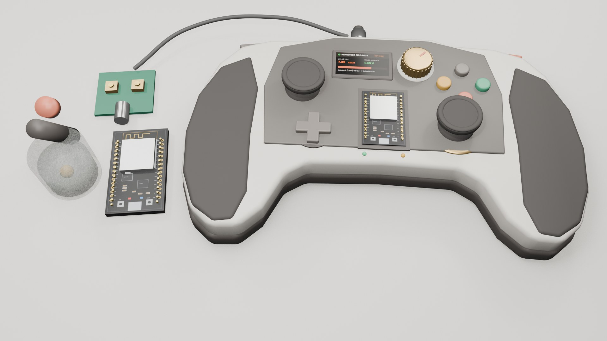
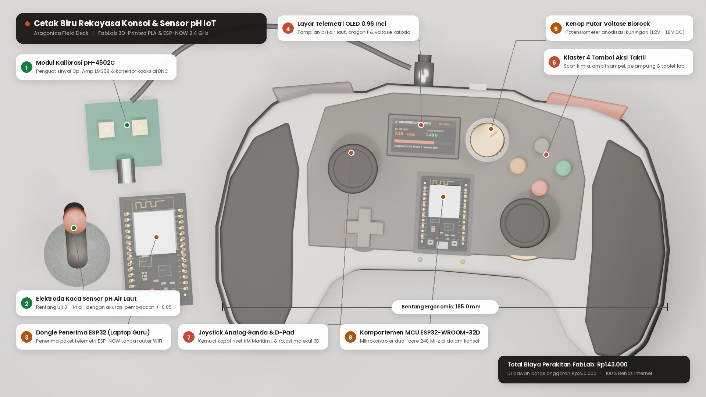
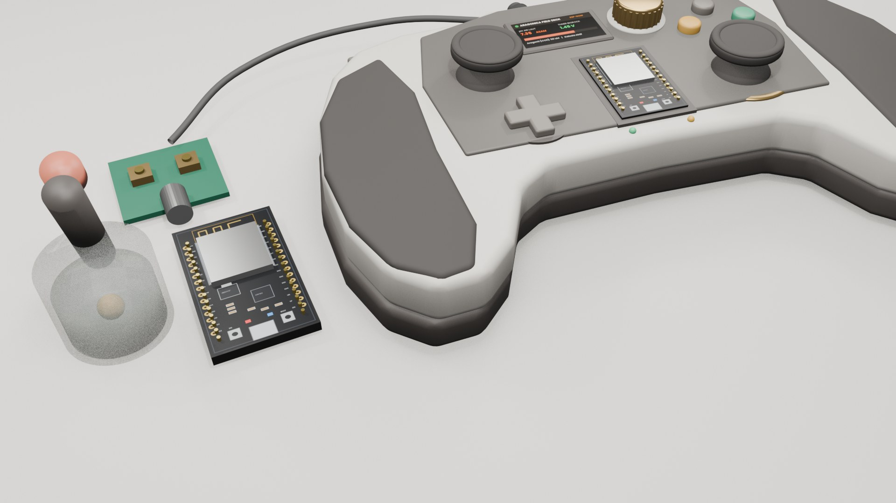
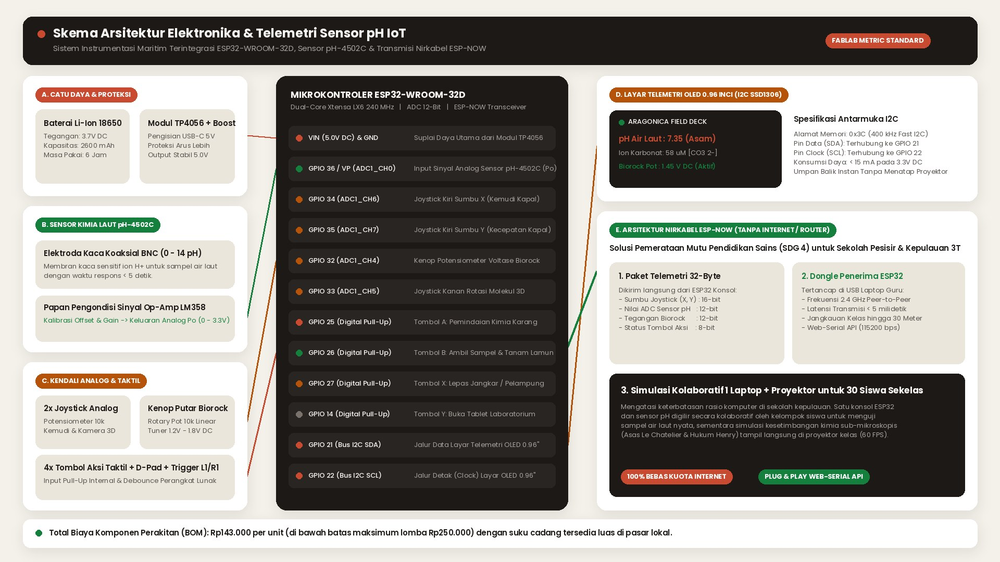

Desain unibody ergonomis two-tone (Sandstone PLA & Basalt Charcoal) dengan OLED 0.96 inci, kenop kuningan Biorock, dan sensor pH-4502C.

Spesifikasi 8 komponen utama dengan bentang ergonomis 185.0 mm dan biaya perakitan FabLab Rp143.000.

Elektroda kaca koaksial BNC untuk pengujian sampel air laut nyata beserta dongle penerima ESP-NOW 2.4 GHz.

Pemetaan pin ADC/GPIO/I2C mikrokontroler ESP32-WROOM-32D dan arsitektur ruang kelas kolaboratif tanpa internet.